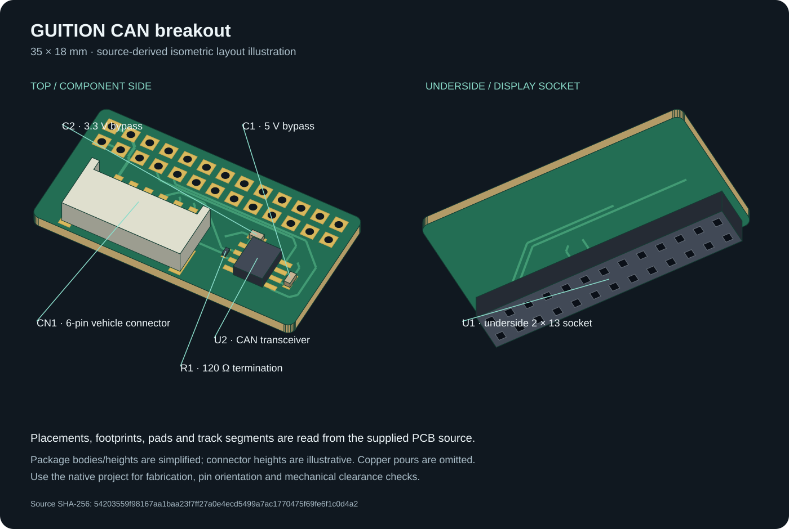
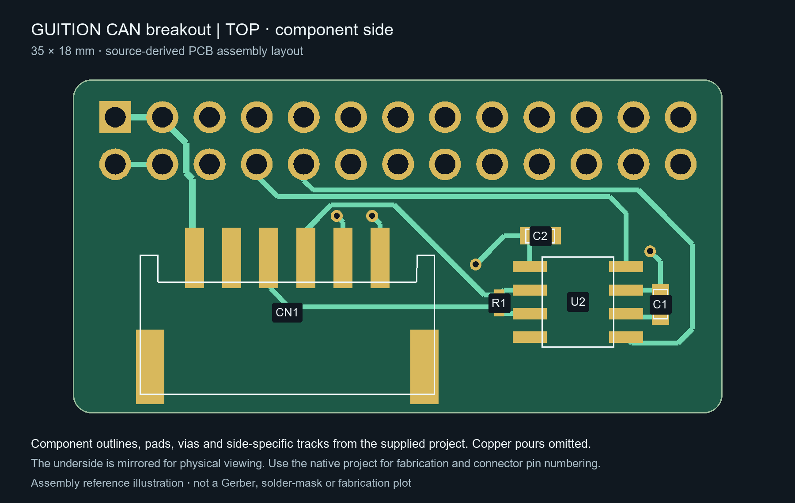
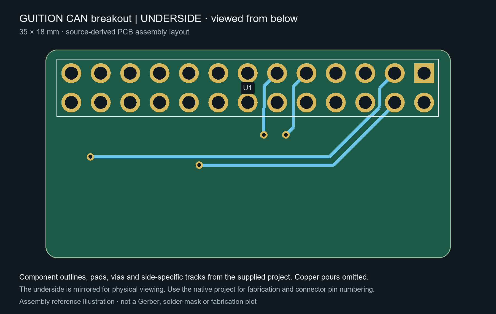
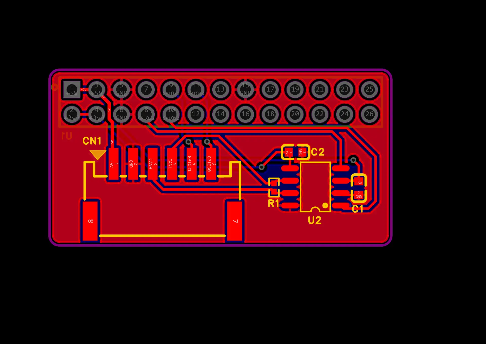
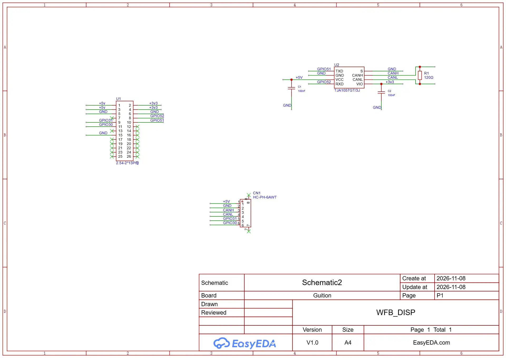

GUITION CAN breakout
Editable PCB source, labelled board views, schematic and CAN wiring.
View sourceThis board adds a CAN transceiver and vehicle connector to the GUITION 4.3-inch display's expansion header. It is a separate PCB project from the case and handlebar mount.
Setup checklist
- Check the connector pin numbers and mating-side orientation before making a cable.
- Confirm 5 V power, ground, CANH and CANL against the tables below.
- Fit the 120 Ω termination only if this board is at a bus end that needs it.
- Use firmware configured for CAN TX GPIO51 / RX GPIO52, then select CAN in Settings.
The supplied design has not been verified as a fabricated assembly. Check the native project before manufacturing or wiring.
Labelled board views

This source-derived isometric illustration uses the actual board outline, placements, footprints, pads and track segments. Component bodies are simplified, connector heights are illustrative and copper pours are omitted. It is not a native vendor-model render or a mechanical clearance model. U1 is mounted on the underside, while the other components are on the top side.
Top layout

Underside layout

These side-specific assembly illustrations are generated from the source geometry. They show each side's tracks and component outlines, plus through-hole pads; copper pours are omitted. The underside is mirrored for physical viewing. Use the native project for manufacturing plots and connector pin numbering.
Native combined-layer preview

Schematic

Components
| Reference | Supplied part | Function |
|---|---|---|
| U1 | 2 × 13 female header, 2.54 mm pitch | Underside display expansion socket |
| CN1 | HC-PH-6AWT, six positions, 2 mm pitch | Vehicle wiring connector |
| U2 | NXP TJA1057GT/3J, SOIC-8 | CAN transceiver with 5 V supply and 3.3 V logic supply |
| R1 | 120 Ω, 0402 | CANH-to-CANL termination |
| C1 | 100 nF, 0603 | 5 V supply bypass |
| C2 | 100 nF, 0603 | 3.3 V logic supply bypass |
R1 is wired directly across CANH and CANL in this design. Populate termination according to the board's position on the bus; do not add an extra terminating resistor to an already terminated intermediate node.
Vehicle connector CN1
| Pin | Net | Purpose |
|---|---|---|
| 1 | +5V | 5 V rail |
| 2 | GND | Common ground |
| 3 | CANH | CAN high |
| 4 | CANL | CAN low |
| 5 | GPIO31 | Additional display GPIO |
| 6 | GPIO30 | Additional display GPIO |
These are the source's pin numbers. Confirm the pin-1 marker and mating-side orientation in the editor and on the actual connector before making a cable. The footprint's pads 7 and 8 are unconnected mechanical pads, not additional signal pins.
Display socket U1
| Pin | Net | Pin | Net |
|---|---|---|---|
| 1 | +5V | 2 | +3v3 |
| 3 | +5V | 4 | +3v3 |
| 5 | GND | 6 | GND |
| 7 | Unconnected | 8 | GPIO52 / CAN RX |
| 9 | GPIO31 | 10 | GPIO51 / CAN TX |
| 11 | GPIO30 | 12 | Unconnected |
| 13 | Unconnected | 14 | Unconnected |
| 15 | GND | 16–26 | Unconnected |
Pin numbering is taken from the underside-mounted footprint. Use the native project to check which physical end is pin 1 rather than treating an underside view as a top view.
Firmware configuration
The schematic connects U2 TXD to GPIO51 and RXD to GPIO52. To enable this wiring, add these build flags to the GUITION hardware profile's existing flags:
-DCAN_TX=51
-DCAN_RX=52
The supplied firmware profile does not enable those pins automatically. Once configured, choose CAN in Settings and use a bitrate matching the vehicle; the default is 500 kbit/s. See connections and proxy for transport selection and controller discovery, and GUITION hardware for the rest of the board setup.
Editable source
Download the EasyEDA Pro project. The supplied archive records editor version 3.2.209 and includes the schematic, PCB, footprints and component metadata. Import it into EasyEDA Pro as a project archive; keep the .epro2 extension.
The supplied layout is 35 × 18 mm, with 1 mm corner radii and an approximately 1.6 mm two-layer stack. These details describe the supplied design, rather than a verified fabricated assembly. Gerbers, drill files and an assembly-ready manufacturing package are not included here.